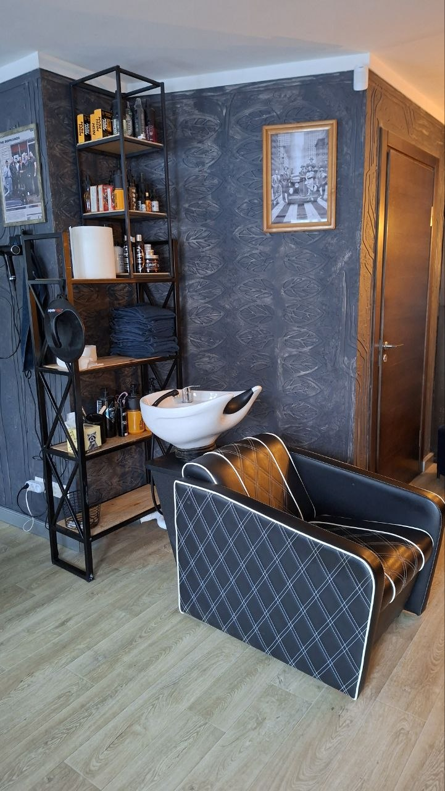
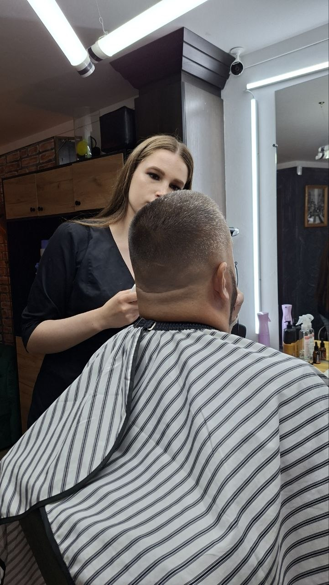
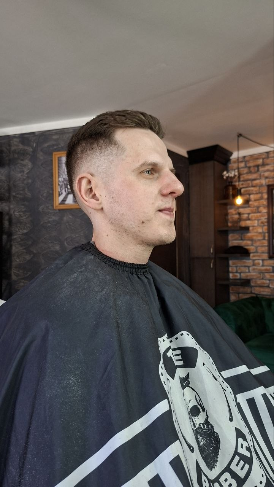
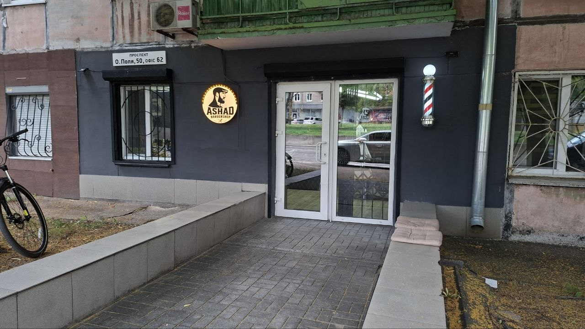
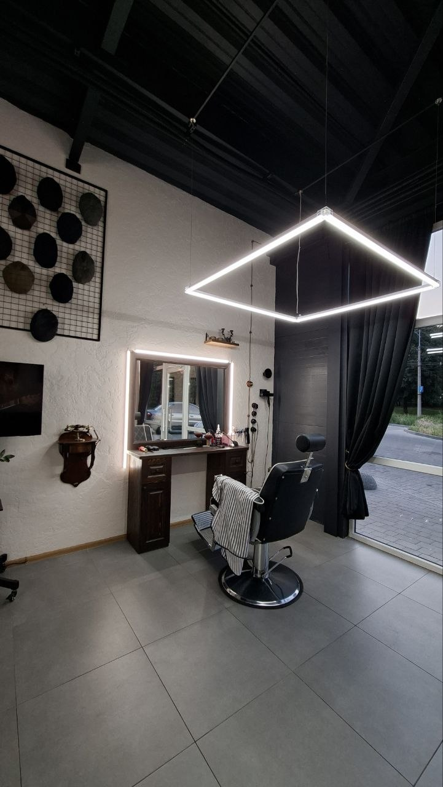
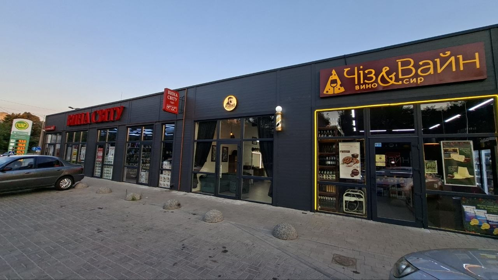

Атмосфера
Дві зали, зовсім різні на вигляд. Спільне — зелений диван, кашкети і колажі на стінах.
Зала на Полі







Зала на Тополі





Як це виглядає
Дванадцять коротких відео з обох зал. Тягни вбік мишею або крути колесом.
тягни вбік